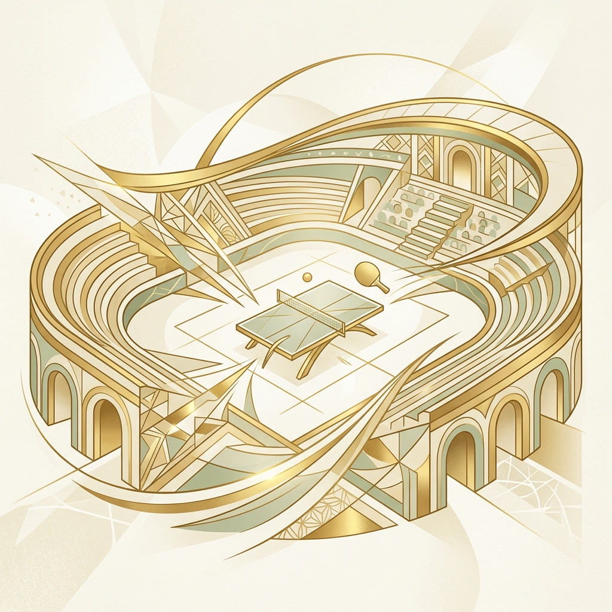

Федерация настольного тенниса России
Суперкубок — итоговый турнир сезона ФНТР. 16 сильнейших мужчин и 16 сильнейших женщин страны. Место проведения — Международный центр бокса в Лужниках, декабрь 2025 года. Мне нужно было обеспечить максимальное медиаприсутствие для события, которое исторически не попадало в федеральную повестку.
356 публикаций — 48 в СМИ, 308 в соцсетях. Суммарная аудитория перевалила за 2,27 миллиона. Для настольного тенниса это уровень, которого раньше не было. Схема оперативного PR-сопровождения, которую я выстроила на этом турнире, стала стандартом для последующих мероприятий Федерации.